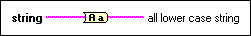

To Lower Case Function
Owning Palette: String Functions
Requires: Base Development System
Converts all alphabetic characters in string to lowercase characters. Evaluates all numbers in string as ASCII codes for characters. This function does not affect non-alphabetic characters.
The connector pane displays the default data types for this polymorphic function.

 Add to the block diagram Add to the block diagram |
 Find on the palette Find on the palette |